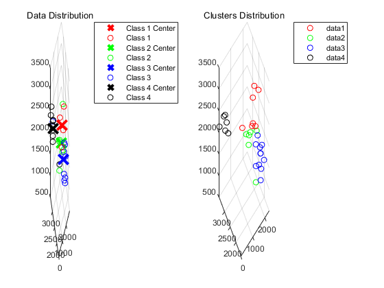

Contents
数据导入
data = readmatrix("../Data/BayesClassifierData.xlsx");
data(:, 4) = int16(data(: , 4));
n_samples = size(data, 1); n_train = 29; n_test = n_samples - n_train;
train_X = data(1:n_train, 1:3);
train_X(:, 4) = 1;
test_X = data(n_train+1:n_test+n_train, 1:3);
test_X(:, 4) = 1;
train_y = data(1:n_train, 4);
超参数与初始化
K = 4;
centers = init(train_X, train_y, K);
迭代过程
num_iterations = 0;
test_y = classification(test_X, centers);
res_visualization(train_X, train_y, test_X, test_y, centers, K);

函数
function centers = init(train_X, train_y, K)
centers = zeros(K, size(train_X, 2));
for i = 1:K
centers(i, :) = mean(train_X(train_y==i, :));
end
end
function pred_y = classification(test_X, centers)
n = size(test_X, 1);
pred_y = zeros(n, 1);
for i = 1:n
distances = sum(power(centers-test_X(i, :), 2), 2);
[~ ,pred_y(i)] = min(distances);
end
end
function res_visualization(train_X, train_y, test_X, test_y, centers, K)
plot_styles = {'ro', 'go', 'bo', 'ko'};
center_styles = {'rx', 'gx', 'bx', 'kx'};
hold on;
subplot(1, 2, 1)
for i = 1:K
class_samples = train_X(train_y==i, :);
plot3(centers(i, 1), centers(i, 2), centers(i, 3), center_styles{i}, 'MarkerSize', 15, 'LineWidth', 3);
hold on;
plot3(class_samples(:, 1), class_samples(:, 2), class_samples(:, 3), plot_styles{i});
end
grid on;
title('Data Distribution');
legend('Class 1 Center', 'Class 1', 'Class 2 Center', 'Class 2', ...
'Class 3 Center', 'Class 3', 'Class 4 Center', 'Class 4');
subplot(1, 2, 2)
for i = 1:K
class_samples = test_X(test_y==i, :);
if size(class_samples, 1) == 0
disp("绘制时该类没有样本"); disp(i);
continue;
end
plot3(class_samples(:, 1), class_samples(:, 2), class_samples(:, 3), plot_styles{i})
hold on;
end
grid on;
title('Clusters Distribution')
legend();
end